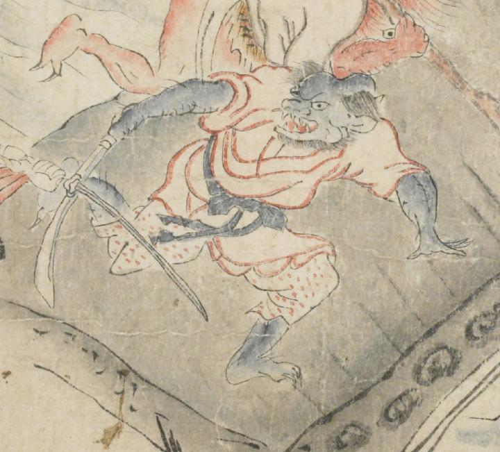

青い鬼。頭はつぶれ、左右の脇に角が生え、耳が尖っている。目玉は丸く、鼻は潰れ、開いた口の上下に牙が生えている。側頭部から髪が生え、顎ひげを生やしている。手足の指の爪は鋭い。赤い着物を着て、右手に刀を持ち、右側に向って逃げている。
著作者：坂本弥一郎徳定／出典：親書誌：U426_nichibunken_0080：伊吹山酒呑童子絵巻；イブキヤマシュテンドウジエマキ／日付：2007／資源識別子：U426_nichibunken_0080_0012_0002
Copyright (c)2010- International Research Center for Japanese Studies, Kyoto, Japan. All rights reserved.